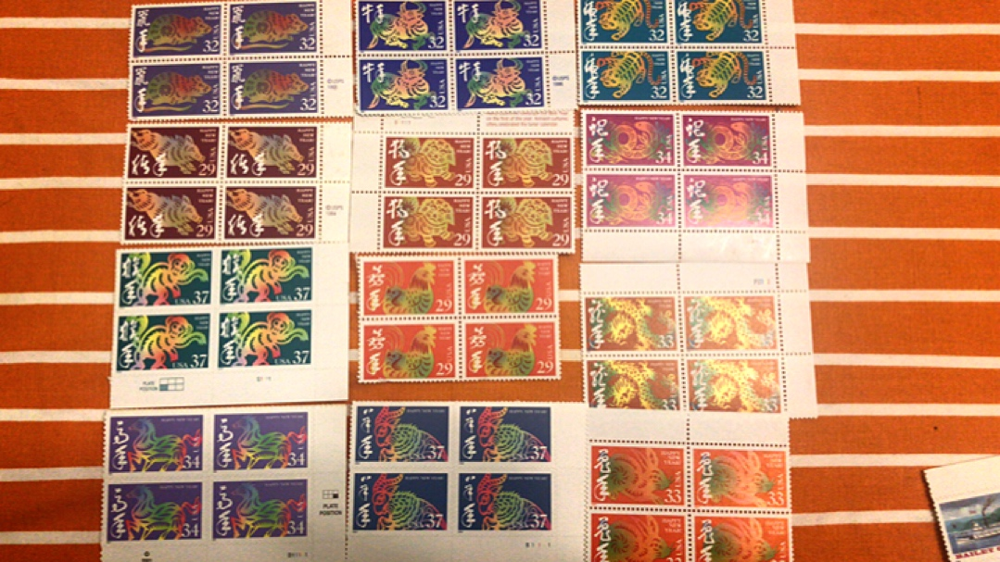

This website is purpose for showing my collection of stamps. I colllected these stamps from my elemtary school. Most of them are collected from the letters my fanily received. Some of them were bought in the post office. Some of them are collected in small boolets.
When I first get the stamps, I looked at them carefully. These little art pieces attracted me so much. The first stamps I got was the stamps I showed on the image. From that time, I learned to colllected them from the evelope and tried to get better score on tests in order to get some new ones. These stamps represents my memories in childhood.